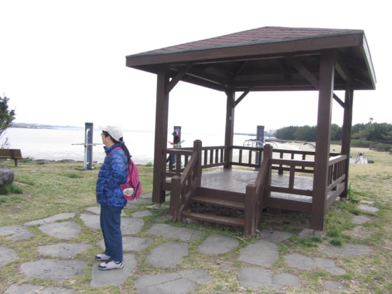

早上九時離開只住宿了一晚的西歸浦 M-STAY Hotel Jeju, 乘巴士往下一個停留城市-表善, 約上午十時二十分便抵達我們下榻的雷森觀光酒店 (제주리시온호텔 Rezion Tourist Hotel), 將行李寄放在酒店一樓大堂後, 便開始今日表善的行程。
表善的觀光景點不多, 主要是大長今拍攝場地 – 濟州民俗村 (제주민속촌박물관), 相信是大部份旅客來表善的最主要目的, 更可能是唯一目的。但濟州民俗村並不是我們來表善的原因, 我們甚至沒有安排去……, 因為門票太貴了, 明天的行程才是我們來這裡的唯一目的。當然, 還要看天公是否有憐憫之心, 如果明天仍然下雨, 行程便肯定要取消, 那麼來表善便等於白走一趟了。
表善上午行程
因提早了半天來表善, 便隨意安排了一些景點, 以下是我們上午在表善的最終行程:
雷森觀光酒店 → 表善海灘海邊 (표선해비치해변) → 偶來3號小路 →
偶來3號小路終點站 → 偶來4號小路起點站 → 偶來4號小路 → 表善里漁港 →
表善防波堤 → 表善漁港黑色石灘白燈塔 → 偶來4號小路 →
韓劇 IRIS 拍攝場地 白色燈塔 → 濟州民俗村 → 油菜花路 → 表善海灘海邊 → 午餐
走出酒店, 轉右沿馬路走, 看見馬路兩旁的櫻花樹, 枝上仍然是細細粒和黑黑的花蕾, 對明天的行程已不太樂觀了! 今年濟州島的天氣出了什麼問題? 已經是三月底了, 離開花竟然還有一段頗長日子呢! 恐怕比首爾還要遲。
在前面的第一個十字路口轉左。
經過一個巴士站 – 「표선리」巴士站, 我們明早便是在這裡乘巴士往有「濟州島春天最美麗道路」美譽的鹿山路 (녹산로)遊覽, 再抬頭望望馬路兩旁光禿禿的櫻花樹, 假使明天天公造美, 可以按計劃進行, 真恐怕同樣是白走一趟! 突然間有患得患失的感覺! 最幸福是她, 不知道我在擔心什麼。
繼續沿馬路往前走。
走了一會, 迎面是一個很寬闊、很複雜的路口, 路的中間是一個迴旋處。這時已有點迷失方向的感覺, 不知走那條路才是。幸好路口豎立了一幅很大的地方, 看了一會, 確定了我們現在的位置, 確定了前面左邊是表善海灘海邊, 右邊是濟州民俗村, 再看看手上的地圖, 發覺燈塔的位置不同, 莫非我出發前弄錯了方向?
走到迴旋處對面, 轉左朝海邊的方向走。
前面已經是濟州民俗村 (제주민속촌박물관)的範圍。
表善海灘海邊 (표선해비치해변) – 偶來3號小路
我們不打算往濟州民俗村, 便轉左走過馬路, 來到表善海灘海邊, 這裡已經是偶來3號小路其中一段。


{kind=link}